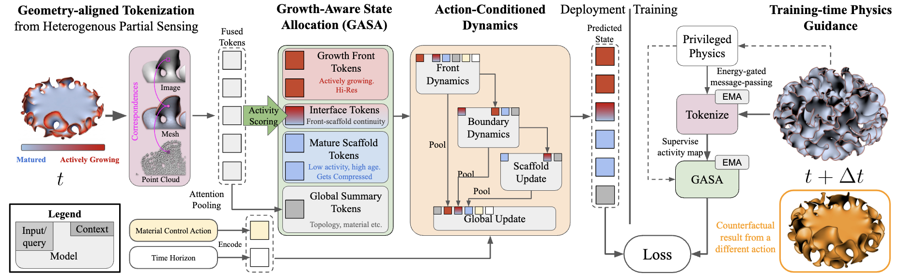
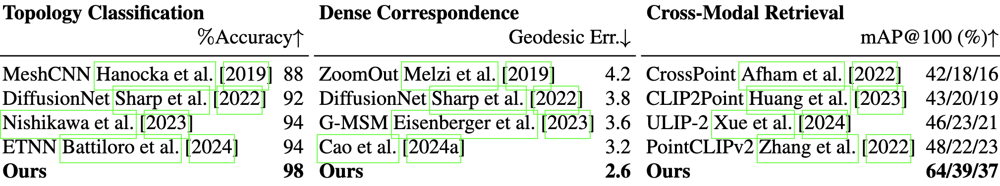
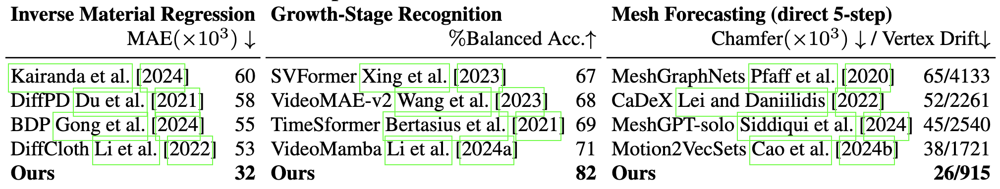
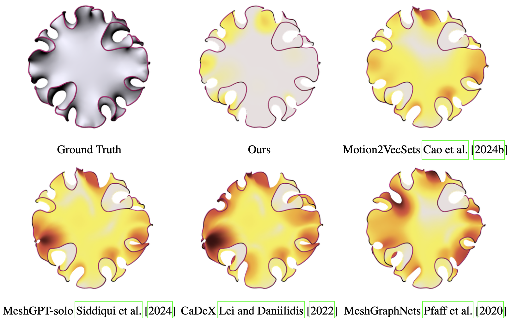
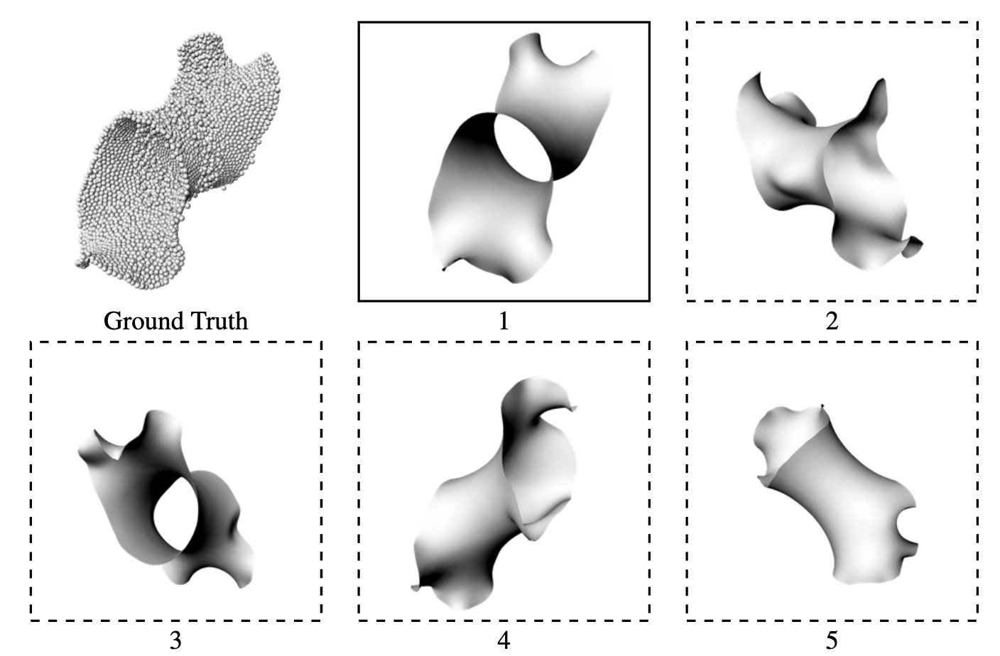
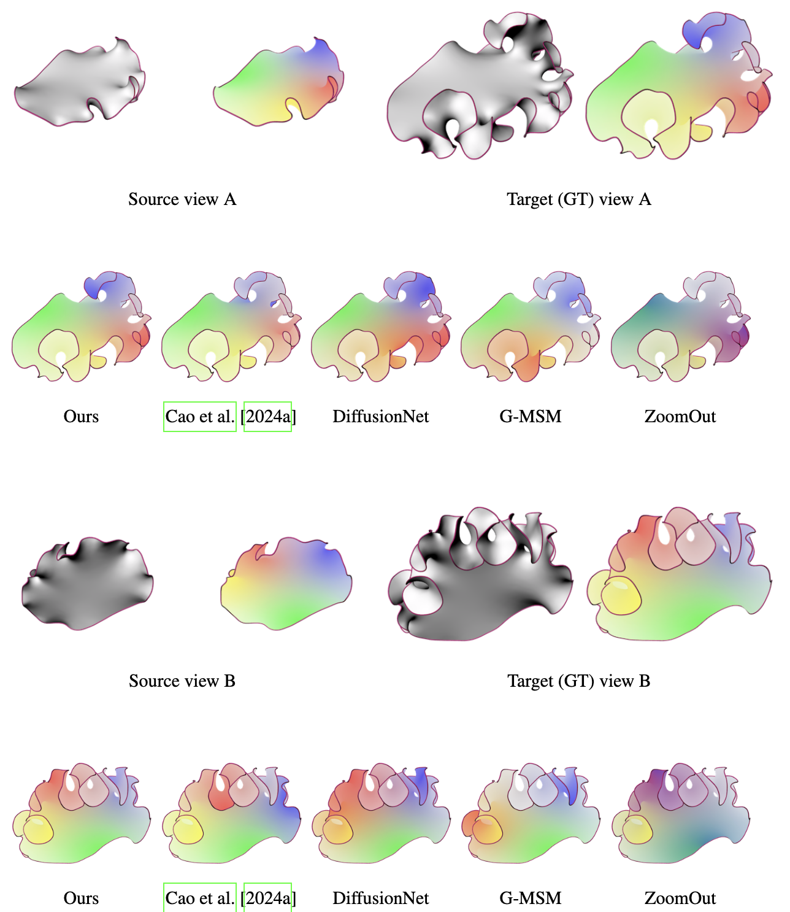
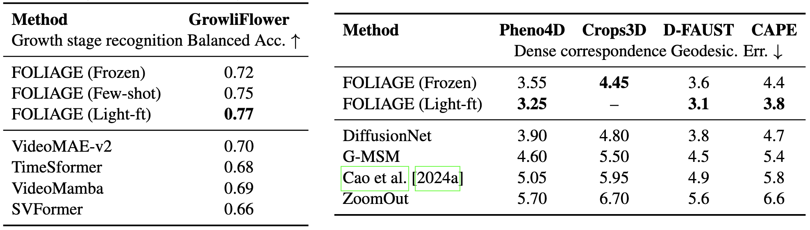
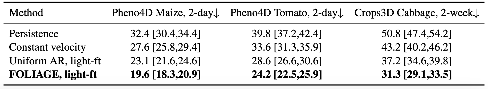

1Brown University | 2Peking University
Many physical systems do not merely move or deform; they grow, adding material and changing the geometry that a world model must represent. Existing world models are typically optimized for pixel prediction, reward prediction, or fixed-support physical dynamics, leaving open how to model systems whose underlying physical support expands over time and whose future morphology depends on hidden material response. We introduce FOLIAGE, a geometry-centered latent world model for growing surfaces. Within a fixed state budget, FOLIAGE represents mature regions as a compact scaffold while allocating higher-resolution state to regions predicted to drive near-future growth. This focuses representation and computation where new material and geometric change occur while retaining compact global context. FOLIAGE further separates observation, action, and privileged physics: heterogeneous RGB, point-cloud, and mesh observations are fused into a deployable geometric state; material controls condition the latent dynamics; and hidden physical energies guide training but are not required at deployment. To evaluate this setting, we introduce SURF-GARDEN and SURF-BENCH, providing controlled counterfactual branches, dense cross-modal correspondences, hidden physical signals, and stress tests for growing-geometry state learning. FOLIAGE reduces inverse-material error by approximately 40% and 5-step mesh-forecasting Chamfer error by approximately 30% relative to strong baselines, while improving cross-modal retrieval by 14 mAP points. Stress tests show graceful degradation under sensor loss and correspondence corruption. On temporal 3D plant scans, FOLIAGE also improves passive future-geometry forecasting, while transfer experiments show that the learned geometry-centered state remains useful beyond the simulator.

FOLIAGE architecture. FOLIAGE models growing surfaces by building a geometric state from partial sensors, allocating a fixed state budget according to estimated growth activity, and rolling the state forward under material-control actions. Privileged physical signals guide training only and are not required at deployment.

FOLIAGE preserves global and local geometric identity while aligning heterogeneous sensing modalities.

FOLIAGE captures hidden causes and models counterfactual futures.

Future mesh forecasting. Predicted geometry is compared with the ground truth. Geometric error visualized using a color gradient.

Point-cloud-to-mesh retrieval. Top-5 mesh retrieval results demonstrate cross-modal geometric alignment.

Dense correspondence. FOLIAGE establishes consistent fine-grained geometric correspondence between past and future versions of a growing surface.

FOLIAGE transfers beyond SURF-BENCH simulation to real-world plant and human-body geometry.

FOLIAGE improves passive future-geometry forecasting on real-world plant sequences